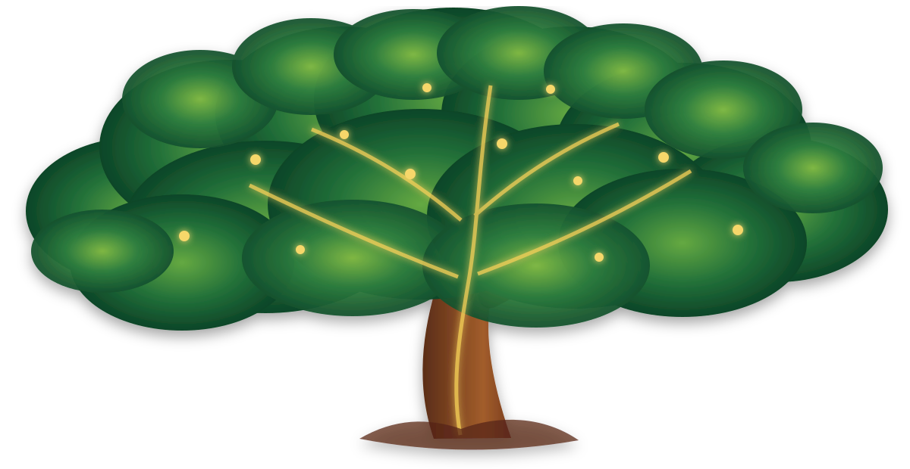

SIYAYO ACADEMY
Piano SIYAYO Stage
Music • Language • Resonance
♪
Pianinho Mágico — reserved layer

Frondosa listens and blooms with the Piano
SIYAYO ACADEMY
Music • Language • Resonance

Frondosa listens and blooms with the Piano